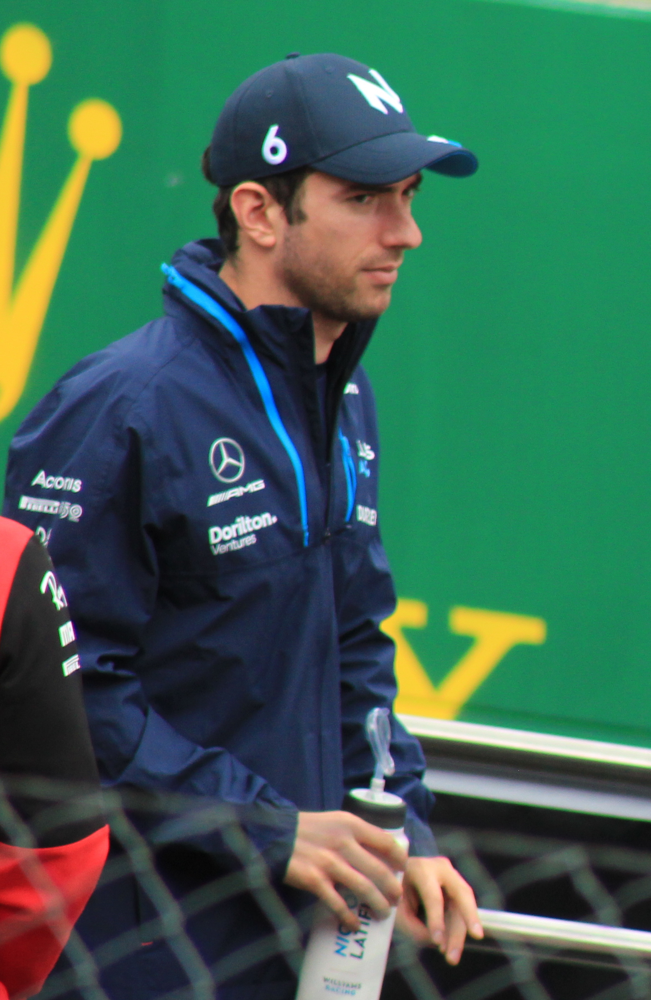
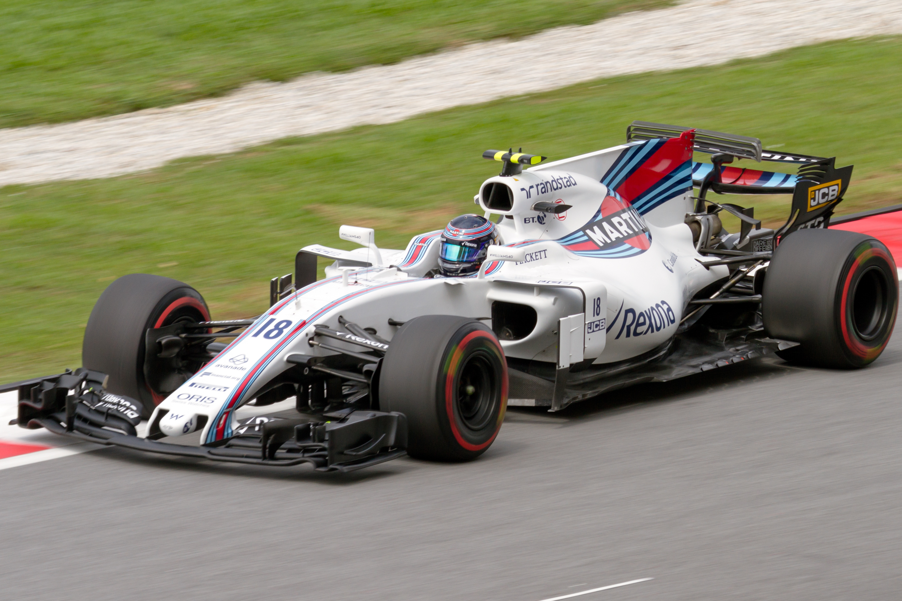
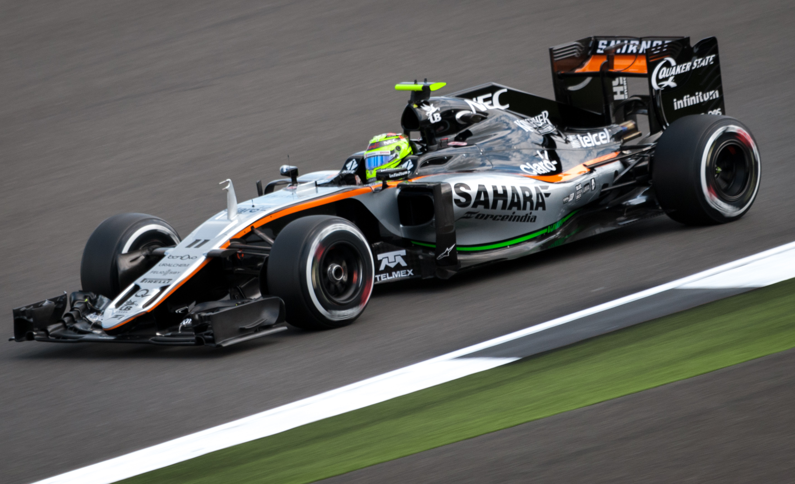
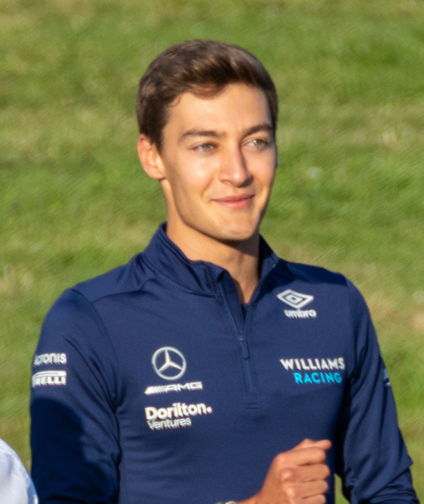
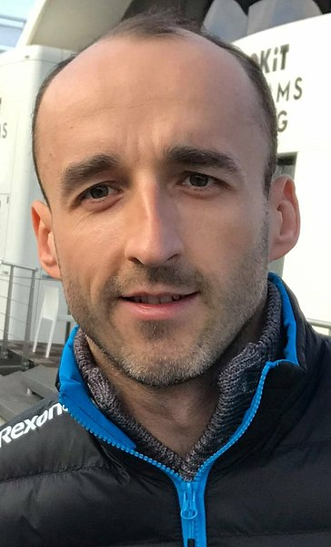
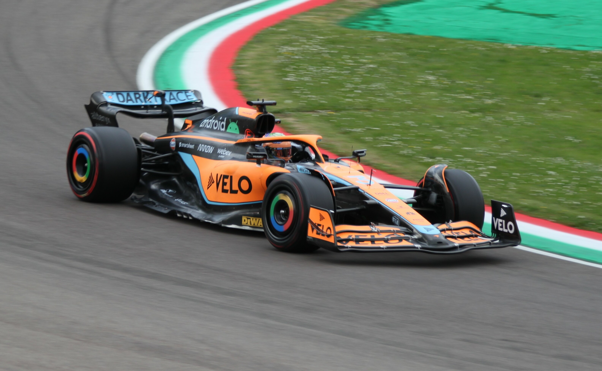
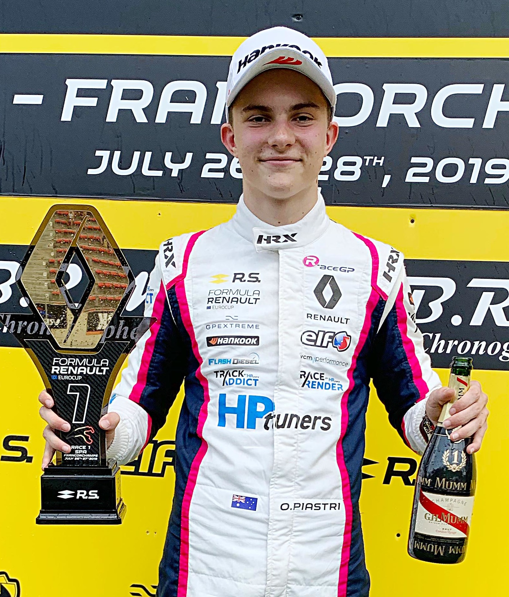

Nicholas Latifi to leave Williams F1 at the end of the Year
2022-09-23
Written by: Reporter Olivia
After beginning with Williams in 2020, Nicholas Latifi is set to not return to the team next year.
The Canadian will leave Williams after scoring 7 world driver championship points through his 3 year
stint with the team (at time of writing, as of the 2022 Italian Grand Prix).

Nicholas Latifi before the 2022 Austrian Grand Prix
Williams Grand Prix Engineering, Williams Racing or simply as Williams began life in 1977. Founded by
Sir Frank Williams. The team was once the top of the grid, notable drivers include Ayrton Senna,
Damon Hill, Alain Prost and many others. Once holding the record for 9 constructors championships
in a row. However, in 2017, the team was in financial hardship. To help, Williams would sign on
Lance Stroll, son of Canadian Billionaire Lawrence Stroll. As reported by Autoweek.com:
Lance Stroll's billionaire father [spent] $80 million to [help his son race] with Williams F1.
As reported by Autoweek.com, "Report: Lance Stroll's father spent $80 million to get son Williams F1 seat."
Click to read their full story.

Lance Stroll during Free Practice 2, driving his Williams at the Malaysian Grand Prix
Stroll would remain with Williams for 2018, however, Lawrence was looking elsewhere. Specifically Force India
(would become Racing Point, now Aston Martin). At the same time, Vijay Mallya, Force India’s CEO would be
extradited from the United Kingdom, accused of fraud and defaulting on loans. Force India would enter
administration, an effort spearheaded by one of their own drivers, Sergio Perez.

Sergio "Checo" Perez driving his Force India during the 2016 British Grand Prix
Stroll would eventually takeover
the team and become their CEO, of course meaning a seat for his son Lance, and an empty seat at Williams.
At this time the team would also change its name to Racing Point
Williams would sign two new drivers for their 2019 season. Robert Kubica and George Russell. However, they would
face financial issues and require more funding. Robert Kubica would leave the team for unrelated reasons, and who
would replace him? Nicholas Latifi.
 
Left: George Russell, Right: Robert Kubica
Similar to Lance Stroll, Latifi would come with funding. Michael Latifi, his father is Chairman and CEO of
Sofina Foods Inc. Sofina is currently a sponsor of Williams, however its doubtful if this will continue following
todays announcement. Claire Williams, daughter of Sir Williams would leave the team at the 2020 Italian Grand Prix,
now the team is under the management of Jost Capito and in a much better financial situation. Meaning they do not
require what is slangily known as a “Pay Driver”.
 Latifi During the 2021 Austrian Grand Prix
Latifi During the 2021 Austrian Grand Prix
 (Left to Right) Antonio Giovinazzi, Kimi Raikkonen, Nicholas Latifi, George Russell
during the 2021 British Grand Prix Driver Parade.
(Left to Right) Antonio Giovinazzi, Kimi Raikkonen, Nicholas Latifi, George Russell
during the 2021 British Grand Prix Driver Parade.
Williams has not yet announced who will replace the Canadian, but it is rumoured that Nyck De Vries may take up
his role, after his unexpected outing at this year’s Italian Grand Prix. Hopefully, now that the team is in a much
better position, they can rise their way up the midfield, and maybe even become title contenders like the “good ol’
days”, the days of the late Sir Frank Williams.
De Vries thrusted into Grand Prix outing
2022-08-29
Written by: Reporter Olivia
Formula E champion Nyck de Vries stood in for William’s driver Alex Albon for the third practice session at the
2022 Italian Grand Prix. However, he suddenly found himself in the deep end after complications with Appendicitis
surgery put Albon on a ventilator.
 Alex Albon in his Williams (Left) and Nyck De Vries, standing in for Sir Lewis
Hamilton in his Mercedes (Right) during Free Practice for the 2022 French Grand Prix
Alex Albon in his Williams (Left) and Nyck De Vries, standing in for Sir Lewis
Hamilton in his Mercedes (Right) during Free Practice for the 2022 French Grand Prix
As part of F1s effort to allow “lower series” drivers help build their experience and help them reach F1, there is
what is know as the young drivers program. This program requires all teams to let a driver other then their
primary drivers participate in a number of free practice sessions. This weekend, Williams planned to let De Vries
participate in such an outing. This was all that was planned for the young dutchmen. However it was soon revealed
that Albon would not be able to participate in the grand prix, and De Vries was quickly informed that his work
was not quite finished.
 Alex Albon, before the 2022 Australian Grand Prix
Alex Albon, before the 2022 Australian Grand Prix
De Vries would Qualify his car 13th and would start 8th after grid penalties to cars ahead. He would finish in 9th,
scoring 2 championship points. After the race De Vries was helped from the car.
Can someone help me or am I alone in Parc Ferme? I can literally not even lift my arms anymore.
Nyck De Vries to his race engineer over the
in car radio post race
It seems that the much larger g forces from the much faster and grippier Formula 1 cars, compared to the Formula E
Nyck is used to took a toll on him. Which is to be expected, as not being a F1 driver means he is not used to the
strain and does not train for such forces. Along with this Formula E races only last 45 minutes, where a Formula 1
races tends to last upwards of 90.
 Nyck De Vries during practice for the 2021 London E-Prix, driving
for Mercedes-EQ Formula E Team
Nyck De Vries during practice for the 2021 London E-Prix, driving
for Mercedes-EQ Formula E Team
The most important part of this story is that Alex Albon has now made a full recovery from his complications.
He is planned to return after the break for the Singapore grand prix.
With the two points scored by De Vries, this brings the total number of Constructors Points achieved by Williams up
to 6. 4 scored by Alex Albon, 2 by De Vries and 0 by Nicholas Latifi. There is little surprise that rumors of Nyck
replacing the Latifi at Williams have spread like wildfire. As of now, there has been no statement by Williams as
to their 2023 driver lineup.
Daniel Ricciardo will not return to McLaren in 2023
2022-08-24
Written by: Reporter Olivia
It was announced today that Daniel Ricciardo will not return to McLaren for the 2023 season. While it is unclear who will replace the Australian,
Paddock rumor is that it will be fellow Australian Oscar Piastre, Who is the subject of recent contract drama.
Daniel's Statement (Twitter.com)
Daniel has been apart of the McLaren F1 team since 2021, replacing Carlos Sainz. Daniel stood on top of the Podium in 2021
in Italy and the historic Autodromo Nazionale Monza, alongside teammate Lando Norris. However it has not been smooth
sailing for the honey badger, struggling to get to grips with the car, and not meeting the teams expectations.

Daniel in Imola for the 2022 Emilia Romagna Grand Prix
Oscar Piastri, Alpines Reserve Driver was under contract until the beginning of August 2022. One day before the contract
was set to expire, Alpine driver Fernando Alonso announced he would be leaving for Aston Martin racing.
This sparked rumors that Piastri would replace Alonso at the team. Alpine release a statement saying that
Piastri would take up this role, however Piastri soon released a statement via twitter that this would not be the case.

Oscar Piastri at Spa-Francorchamps in 2019
I understand that, without my agreement, Alpine F1 have put out a press release late this afternoon that I am
driving for them next year. This is wrong and I have not signed a contract with Alpine for 2023.
I will not be driving for Alpine next year.
Oscar Piastri, via Twitter.com
It is currently unclear who will drive for both McLaren & Alpine at this time. All we can do at this time is speculate. We however can confidently
say that some bridges are being burned in front of us.